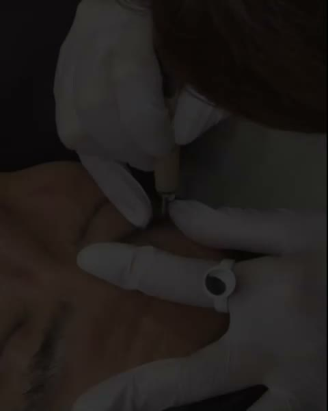
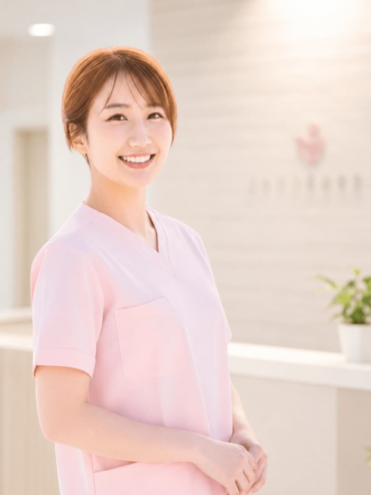
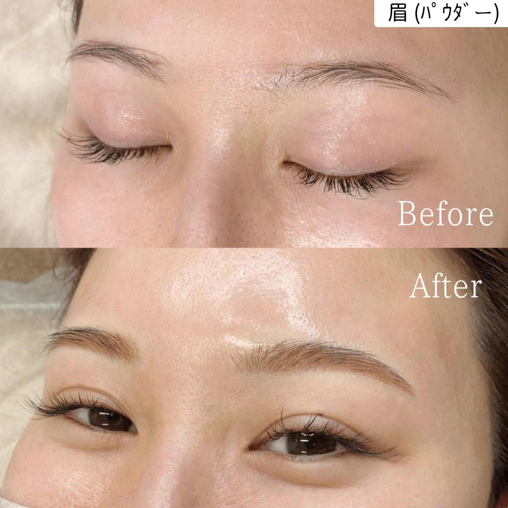
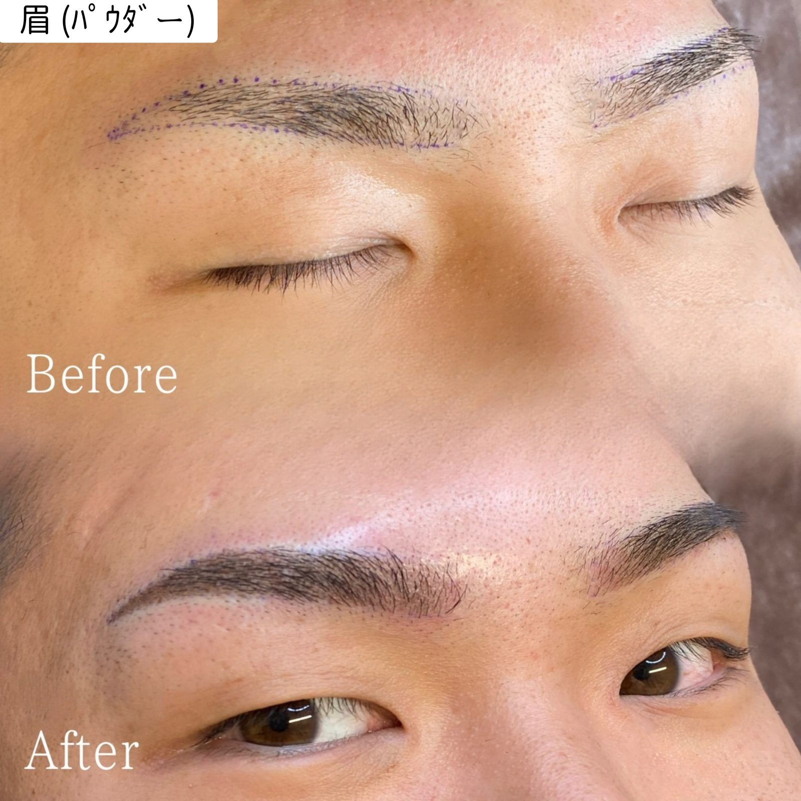
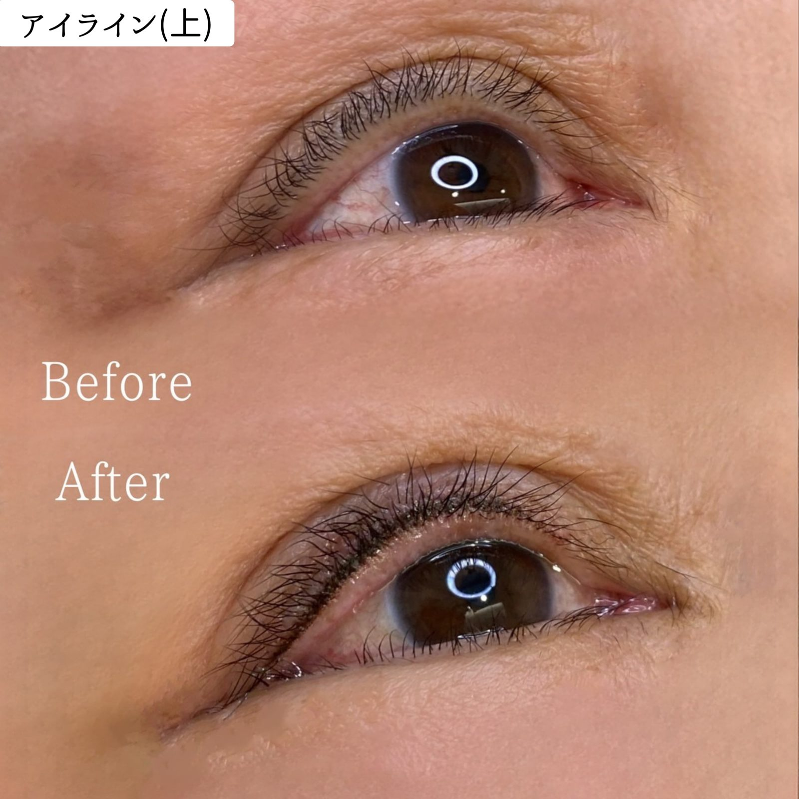
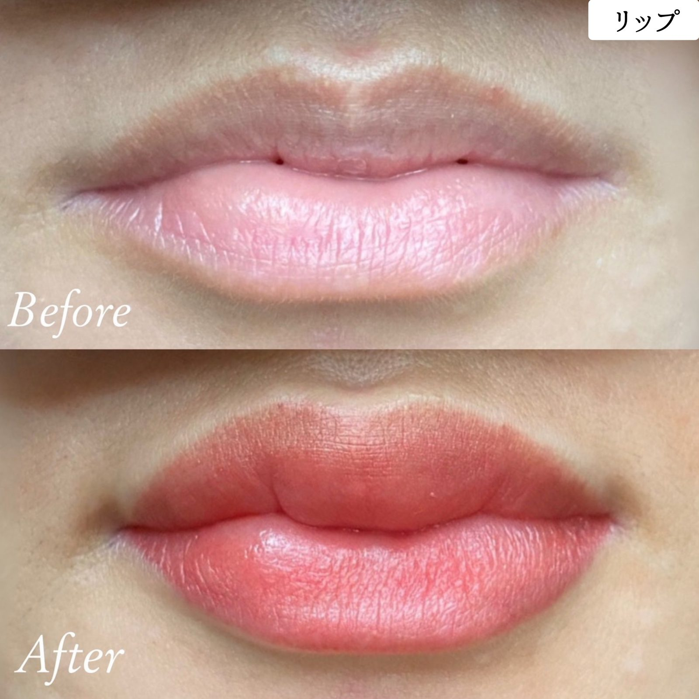

Tochigi / Utsunomiya · Mibu
宇都宮の隣・壬生町で出会う、あなただけに馴染む医療アートメイク。
看護師のアーティストが、医療機関の個室で丁寧に。

宇都宮・栃木の医療アートメイクとは、皮膚のごく浅い層に専用の色素を入れ、眉・アイライン・リップ・ヘアラインなどを自然に補う医療行為です。宇都宮市の隣・壬生町安塚のみぶ整形外科クリニック（美容皮膚科・駐車場あり）で、看護師国家資格を持つ専任アーティストkomiが医師管理のもと施術します。施術実績は3,000件以上、完全予約制です。
3,000件+
施術実績
6年
銀座等・大手クリニック在籍
個室
美容皮膚科は全室個室
正看護師
看護師国家資格 ／ 医師管理のもと施術
宇都宮・栃木でアートメイクをお探しの方へ
毎朝の眉メイクに
時間がかかる
汗や水で
メイクが落ちてしまう
左右の眉が
うまく描けない
すっぴんに
自信が持てない
宇都宮の近くで
医療機関を探している
傷跡・白斑など
医療補助施術を希望
みぶ整形外科クリニックは、整形外科と美容皮膚科を診療する医療機関です。美容皮膚科は全室個室で、人目が気になるお悩みでもゆっくりご相談いただけます（クリニック公式サイトの案内）。
宇都宮市の隣の壬生町にあり、東武宇都宮線「おもちゃのまち駅」から徒歩約10分。お車の方は駐車場をご利用いただけます。
担当のkomiは、銀座等の大手クリニックで6年間・3,000件以上の施術を経験。確かな技術を栃木でもご提供します。

銀座等の大手アートメイク専門クリニックで6年間在籍し、3,000件を超える施術を経験。正看護師資格を活かした安全で丁寧な施術を提供しています。
一人ひとりの骨格・肌色・ライフスタイルに合わせたデザインを、ペンシルで描きながら一緒に決めていきます。プライバシーへの配慮を最優先に、安心してご相談いただける環境づくりを大切にしています。
すべてみぶ整形外科クリニック内、医師の管理のもとで行います
施術メニューの対応状況は、日程により変わる場合があります。詳しくはLINEでご確認ください。
komiのこれまでの施術例（眉・アイライン・リップ・ヘアライン）




写真はご本人の同意を得て掲載しています。施術直後は色が濃く見え、仕上がりには個人差があります。主なリスク・副作用は、炎症症状（赤み・腫れ・熱感・痛み・内出血）、ダウンタイム中のかゆみ、アレルギー症状、感染、にじみなどです。ダウンタイムは1週間前後が目安です。
税込・麻酔料・薬代込み ／ セット有効期限6ヶ月
導入記念価格｜2026年10月〜 先着8名様限定
2回コースの料金です。対象メニューの合計で先着8名様が対象となり、定員に達し次第終了します。
| メニュー（2回コース） | 通常 | 導入記念価格 |
|---|---|---|
| 眉 毛並み／パウダー | ¥140,000 | ¥120,000 |
| 眉 ミックス | ¥154,000 | ¥132,000 |
| アイライン 上／下（各） | ¥140,000 | ¥120,000 |
| リップ | ¥140,000 | ¥120,000 |
| ヘアライン M字のみ | ¥140,000 | ¥120,000 |
| ヘアライン 全体 | ¥154,000 | ¥132,000 |
※ヘアスカルプ・パラメディカル・ほくろは通常料金でのご案内です。
※導入記念価格は、モニター割引など他の割引との併用はできません。
| メニュー | 1回 | 2回セット | 3回目以降（1年以内） |
|---|---|---|---|
| 眉 毛並み／パウダー | ¥77,000 | ¥140,000 | ¥66,000 |
| 眉 ミックス | ¥88,000 | ¥154,000 | ¥66,000 |
| アイライン 上 | ¥77,000 | ¥140,000 | ¥66,000 |
| アイライン 下 | ¥77,000 | ¥140,000 | ¥66,000 |
| リップ | ¥77,000 | ¥140,000 | ¥66,000 |
| ヘアライン M字のみ | ¥77,000 | ¥140,000 | ¥66,000 |
| ヘアライン 全体 | ¥88,000 | ¥154,000 | ¥66,000 |
※アイラインのテールありは要事前相談です（テールあり +11,000〜15,000円／回）。
※リップは、抗ヘルペス薬（バラシクロビル5日分）が別途 ¥3,300です。
※ヘアラインの毛並みは、原則女性のみの提供です。
| その他 | 料金 |
|---|---|
| ヘアスカルプ 名刺サイズ1枚 | 1回 ¥66,000 |
| ヘアスカルプ 名刺サイズ2枚 | 1回 ¥88,000（追加1枚ごと +¥22,000） |
| パラメディカル 白斑・傷跡（目安10cm程度） | 1回 ¥66,000 |
| パラメディカル 妊娠線・ストレッチマーク（目安はがき大2枚分程度） | 1回 ¥77,000 |
| ほくろ | 1個 ¥15,000（単品予約不可。他メニューとの同日施術のみ） |
| アートメイク初回診察料 | ¥3,300（再診は ¥500） |
|---|---|
| アレルギー検査（パッチテスト） | 1回 ¥15,000 |
| カウンセリングのみ | 対面 ¥10,000 ／ オンライン 無料 |
| モニター割引 | 5,000円引き（各部位につき1回、初回会計時。通常料金・2回コースともに対象。他の割引との併用不可） |
モニター条件：InstagramなどのSNSに写真を掲載させていただくことをご了承いただける方（全顔、または顔の50%程度・マスク等で一部を隠した状態）。
料金は予告なく変更することがあります。あらかじめご了承ください。料金の見方は料金・相場の記事もご覧ください。
宇都宮市内から
宇都宮市の隣・壬生町にあります。電車は東武宇都宮線、お車は駐車場をご利用ください。宇都宮からの通い方
鹿沼・栃木市・下野・小山から
壬生町は各市と隣り合う場所にあります。県南・県央からの通い方
おもちゃのまち駅から
東武宇都宮線「おもちゃのまち駅」から徒歩約10分です。壬生町でアートメイクを受けるなら
東京の提携院も選べます
東京・半蔵門の提携院でも施術しています。栃木から東京へ通う場合の記事
ご予約の変更・キャンセルは、ご予約日前営業日の営業時間終了までにご連絡ください。期限を過ぎてからの変更・キャンセル（施術当日を含む）は、キャンセル料として5,000円をいただきます。
宇都宮市の隣・壬生町安塚のみぶ整形外科クリニックの美容皮膚科で、医師の管理のもとアートメイクを行っています。完全予約制で、ご予約はLINE公式から承っています。
はい。komiは壬生町のみぶ整形外科クリニック内で、眉・リップ・アイライン・ヘアラインなどの医療アートメイクに対応しています。アートメイクは医療行為のため、医師のいる医療機関で受けることが大切です。
最寄りは東武宇都宮線の「おもちゃのまち駅」で、クリニックの公式サイトでは徒歩約10分と案内されています。駐車場もあります。
眉（毛並み／パウダー）は1回 ¥77,000、2回セット ¥140,000（税込・麻酔料・薬代込み）です。2026年10月からは、先着8名様限定の導入記念価格で、2回コースが ¥120,000になります。別途、アートメイク初回診察料 ¥3,300（再診 ¥500）がかかります。アイライン・リップ・ヘアラインなどの料金は、このページの料金表をご覧ください。
はい。壬生町は宇都宮市・鹿沼市・栃木市・下野市などと隣り合う場所にあります。お車でも東武宇都宮線でもご来院いただけます。所要時間は出発地や時間帯で変わりますので、事前にご確認ください。
施術日は限られています。最新の日程は、LINE公式でご確認ください。
オンライン相談は無料です。施術日程・料金など、まずはお気軽にご連絡ください。
写真をお送りいただくとよりスムーズにご提案できます。